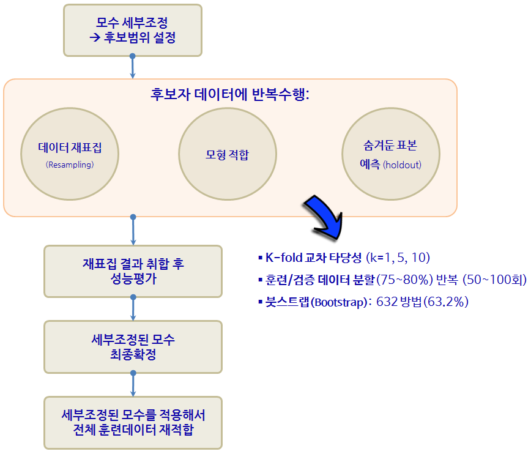
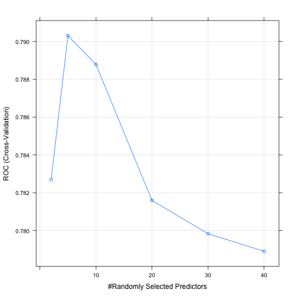
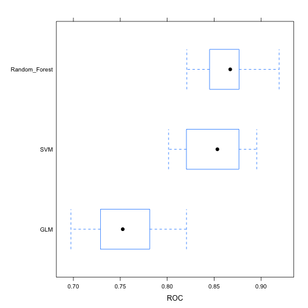
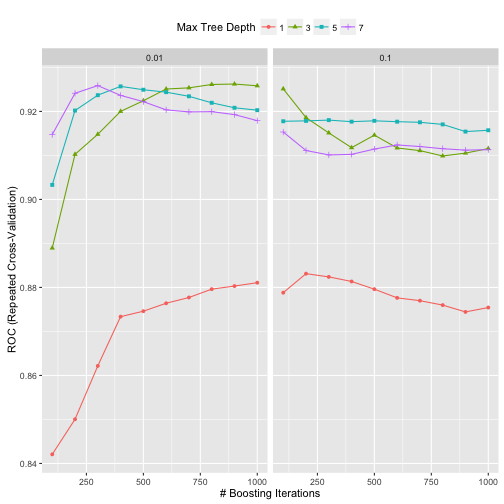

xwMOOC 기계학습
기계학습 예측모형(Predictive Modeling)
학습목표
- 전통적 통계모형과 비교하여 예측모형에 대해 이해한다.
caret팩키지의 등장배경과 데이터기반 기계학습 예측모형을 이해한다.caret팩키지의 10년에 걸친 여정을 살펴본다.- 예측모형 튜딩에 대해 이해한다. 특히 하이퍼-파라미터를 데이터를 활용하여 객관적으로 찾아낸다.
- 범주 예측에
randomForest대신ranger로 모형을 구축한다. - 연속형 예측에
glm대신glmnet으로 모형을 구축한다.
1. 전통적 통계모형과 예측모형 비교
예측모형(Predictive Model)은 정확도가 높은 모형을 개발하는 과정이다. 따라서, 전통적 통계학에서 강조하는 추론, 타당성, 유의성, 가정과 같은 개념적인 것보다는 “실질적으로 정확하게 예측을 할 수 있는가?” 라는 문제늘 더 중요하게 다루고 있다.
예측모형에서 중요하게 고려되는 사항
- 예측모형 성능
- 예측의 단순성
- 복잡성과 컴퓨팅 비용을 줄이도록 변수(특성, Feature) 축소
- 예측수식 평활(smoothness)
- 예측모형의 강건성

2. caret 팩키지
caret 팩키지와 같은 예측모형 전용 팩키지가 필요한 이유는 너무나 많은 예측모형이 존재하고, 더 큰 문제는 사용법과 해석이 모두 다르다는데 있다. 너무 많은 사람이들이 오랜기간에 걸쳐 개발하다보니 어쩌면 당연한 문제라고 볼 수도 있다.
2.1. R 팩키지 구문
기계학습에서 가장 많이 작업하는 것 중에 하나가 분류문제에 대한 예측 알고리즘을 제시하는 것이다. 데이터도 다양하지만, 분류문제에 대한 다양한 이론이 존재하고, R로 구현된 팩키지도 정말 다양한다. 예를 들어, lda는 판별분석(Linear Discrimant Analsyis)을 돌릴 때 사용되는 것으로 MASS 팩키지에 포함되어 있고, 훈련데이터 혹은 검증데이터에 예측값을 구할 경우 predict 함수에 lda 반환값을 넣어주면 되고 추가설정은 필요없다. glm은 일반화 선형모형을 적합할 때 특히 링크함수로 logit을 넣어 설정하고 stats 팩키지에 포함되어 있고, 구문은 lda와 확연한 차이를 볼 수 있다.
gbm, mda, rpart, Weka, LogitBoost등 다양한 예측 알고리즘이 존재한다. 다음은 Max Kuhn 박사가 caret을 개발한 주요한 사유로 정리한 표다. 이를 일관된 인터페이스로 제공하고 나아가 각 모형의 성능을 객관적으로 비교할 수 있는 성능평가 지표 도출 및 확정을 위해서 꼭 필요한 것으로 판단된다. (본인이 필요해서 개발하지 않았을까 생각되고, 누구나 이런 코드는 갖고 있는데 체계적으로 정리해서 공개한 후, 10년에 걸쳐 시간을 투여한 Kuhn 박사님께 감사드립니다.)
| 예측함수명 | 팩키지명 | predict 함수 예측구문 |
|---|---|---|
| lda | MASS | predict(obj) (추가 인자설정 불필요) |
| glm | stats | predict(obj, type = “response”) |
| gbm | gbm | predict(obj, type = “response”, n.trees) |
| mda | mda | predict(obj, type = “posterior”) |
| rpart | rpart | predict(obj, type = “prob”) |
| Weka | RWeka | predict(obj, type = “probability”) |
| LogitBoost | caTools | predict(obj, type = “raw”, nIter) |
caret에서 지원하는 예측모형 목록 중 일부는 다음과 같고, 전체 목록은 예측모형 caret 목록을 참조한다. 2014년 2월 기준 예측모형과 예측함수 147개, 2016년 1월 기준 216개 폭증.
| 모형 | 예측함수명 | 팩키지 | 세부조정 모수 |
|---|---|---|---|
| 재귀적 분할 | rpart | rpart | maxdepth |
| Boosted trees | gbm | gbm | interaction.depth, n.trees, shrinkage |
| Random forests | rf | randomForest | mtry |
| 신경망 | nnet | nnet | decay, size |
| Support Vector Machine (RBF 커널) | svmRadial | kernlab | sigma, C |
| Support Vector Machine (다항식 커널) | svmPoly | kernlab | scale, degree, C |
| 선형회귀 | lm | stats | 없음 |
| … | … | … | … |
3. 예측모형 공구상자
3.1 확률숲(Random Forest)
단순 의사결정나무모형은 데이터에 적합모형 개발에 시간이 많이 걸리지 않지만, 성능이 떨어진다. 물론, 단순 의사결정나무모형은 나무형태로 예측모형을 생성해 나가 모형이해와 설명, 커뮤니케이션에는 장점이 많다. 하지만, 성능이 좋지 않아, 배깅(Bagging, Bootsrap Aggregation)을 사용한다. 배깅은 부츠트랩 표본을 뽑아 단순 나무모형을 적합시켜 나온 결과를 사용하여 성능을 획기적으로 높인다. 의사결정나무 모형과 확률숲(randomForest) 모형에 대한 장단점은 다음과 같다.
| 의사결정나무 모형(Decision Tree) | 확률숲(Random Forest) |
|---|---|
| 장점 | 장점 |
| 1. 모형을 개발한 후에 비전문가에게 커뮤니케이션하기 용이함. | 1. 초심자가 사용하기 적합 |
| 1. 변수 선택 과정이 거의 자동 | 1. 과대적합 문제에 강건. |
| 1. 결측치에 강건하고 특별한 통계적 가정이 요구되지 않음. | 1. 매우 정확한 비선형 모형. |
| 1. 가장 인기가 있는 기계학습 모형 | |
| 단점 | 단점 |
| 1. 한번에 변수 하나만 고려하여 상호작용관계가 반영되기 어려움 | 1. 선형모형에는 없는 하이퍼-파라미터(Hyper-parameter)를 설정. |
| 1. 수직/수평만으로 학습를 하기 때문에 곡선을 반영에 한계가 있음 | 1. 하이퍼-파라미터는 수작업으로 찾아 설정해야 됨. |
| 1. 하이퍼-파라미터는 데이터별로 설정해줘야 하는데, 모형성능에 영향을 많이 준다. | |
| 1. 모형에 기본설정된 값을 사용해도 되지만, 직접 미세조정을 해야될 경우도 많다. |
caret 팩키지에 포함된 GermanCredit 데이터에 확률숲(randomForest) 모형을 적합시킨다. 채무불이행 Class 변수를 종속변수로 두고, 나머지 설명변수 중에서 불필요한 변수를 제거하고 rf 인자를 넣고 예측모형을 구축한다.
#-------------------------------------------------------------------------------------------
# 03.02. 확률숲(Random Forest)
#-------------------------------------------------------------------------------------------
data("GermanCredit")
dim(GermanCredit)[1] 1000 62
# 변수 전처리: 변수제거
GermanCredit <- GermanCredit[, -nearZeroVar(GermanCredit)]
GermanCredit$CheckingAccountStatus.lt.0 <- NULL
GermanCredit$SavingsAccountBonds.lt.100 <- NULL
GermanCredit$EmploymentDuration.lt.1 <- NULL
GermanCredit$EmploymentDuration.Unemployed <- NULL
GermanCredit$Personal.Male.Married.Widowed <- NULL
GermanCredit$Property.Unknown <- NULL
GermanCredit$Housing.ForFree <- NULL
dim(GermanCredit)[1] 1000 42
# 모형제어 사전설정
gcControl <- trainControl(
method = "cv", number = 10,
summaryFunction = twoClassSummary,
classProbs = TRUE,
verboseIter = FALSE
)
#확률숲(Random Forest)
rf_model <- train(
Class ~ ., data=GermanCredit,
method = "rf",
metric = "ROC",
tuneLength = 5,
tuneGrid = data.frame(mtry=c(2,5,10,20,30,40)),
trControl = gcControl
)Loading required package: randomForest
randomForest 4.6-12
Type rfNews() to see new features/changes/bug fixes.
Attaching package: 'randomForest'
The following object is masked from 'package:ggplot2':
margin
The following object is masked from 'package:dplyr':
combine
plot(rf_model)
# 모형 요약
rf_modelRandom Forest
1000 samples
41 predictor
2 classes: 'Bad', 'Good'
No pre-processing
Resampling: Cross-Validated (10 fold)
Summary of sample sizes: 900, 900, 900, 900, 900, 900, ...
Resampling results across tuning parameters:
mtry ROC Sens Spec
2 0.7826905 0.1033333 0.9942857
5 0.7903095 0.3733333 0.9414286
10 0.7887857 0.4100000 0.9185714
20 0.7815952 0.4500000 0.8914286
30 0.7798333 0.4400000 0.8857143
40 0.7789048 0.4466667 0.8742857
ROC was used to select the optimal model using the largest value.
The final value used for the model was mtry = 5.
# ROC 기준 최적모형
max(rf_model[["results"]][["ROC"]])[1] 0.7903095
3.2. 일반화 선형모형
glmnet 팩키지는 glm 팩키지를 기반으로 기능을 확장한 것으로 자체 변수 선택기능이 내장되어 있다. 다공선성(collinearity)과 더불어 표본크기가 작은 경우 처리에 도움이 된다. 과다적합 문제에 대해 두가지 형태 선택옵션을 제공한다.
- 라소 회귀모형(Lasso Regression):
0이 아닌 회귀계수에 갯수에 벌칙을 부과 - 능선 회귀모형(Ridge Regression): 회귀계수 절대값 규모에 벌칙을 부과
확률숲 모형과 짝을 이루며 성능평가 및 여타 기본 모형으로 훌륭한 역할을 하는 유용한 예측모형이다.
trainControl 함수에 사전 예측모형 개발에 필요한 설정을 적어 둔다. 이를 train 함수에 넘겨 glmnet 팩키지를 사용해서 라소와 능선 회귀모형으로 수뢰를 판별하는 예측모형을 개발한다. 기본설정으로 alpha값 3개, lamdba 값 3개가 적용하여 가장 ROC 값이 높은 조합을 찾아낸다.
#-------------------------------------------------------------------------------------------
# 03.01. 일반화 선형모형: glmnet
#-------------------------------------------------------------------------------------------
# 모형제어 사전설정
# install.packages("glmnet")
# install.packages("pROC")
sonarControl <- trainControl(
method = "cv", number = 10,
summaryFunction = twoClassSummary,
classProbs = TRUE,
verboseIter = FALSE
)
glm_model <- train(
Class ~ ., Sonar,
method = "glmnet",
metric = "ROC",
trControl = sonarControl
)Loading required package: glmnet
Loading required package: Matrix
Loading required package: foreach
Loaded glmnet 2.0-5
# 하이퍼-파라미터
plot(glm_model)
# 모형 요약
glm_modelglmnet
208 samples
60 predictor
2 classes: 'M', 'R'
No pre-processing
Resampling: Cross-Validated (10 fold)
Summary of sample sizes: 187, 188, 187, 188, 187, 186, ...
Resampling results across tuning parameters:
alpha lambda ROC Sens Spec
0.10 0.0004318733 0.8361869 0.7939394 0.7222222
0.10 0.0043187332 0.8506818 0.8121212 0.7333333
0.10 0.0431873324 0.8604293 0.8022727 0.7844444
0.55 0.0004318733 0.8350758 0.7939394 0.7022222
0.55 0.0043187332 0.8564394 0.8212121 0.7333333
0.55 0.0431873324 0.8404040 0.7674242 0.7433333
1.00 0.0004318733 0.8319949 0.7939394 0.6722222
1.00 0.0043187332 0.8501515 0.7757576 0.7433333
1.00 0.0431873324 0.8471212 0.7931818 0.7433333
ROC was used to select the optimal model using the largest value.
The final values used for the model were alpha = 0.1 and lambda
= 0.04318733.
# ROC 기준 최적모형
max(glm_model[["results"]][["ROC"]])[1] 0.8604293
4. 예측 모형 종합
전화회사 고객이탈 예측을 위해 세가지 예측모형을 적합시키고, ROC 기준 가장 성능이 좋은 예측함수를 식별해 낸다. 세가지 예측함수는 GLM, Random Forest, SVM이고, resamples 함수를 통해 예측모형 성능을 비교평가한다.
##==========================================================================================
## 00. 환경설정
##==========================================================================================
suppressMessages(library(caret))
##==========================================================================================
## 01. 데이터 가져오기
##==========================================================================================
suppressMessages(library(pROC))
suppressMessages(library(C50))
data(churn)
##==========================================================================================
## 02. 데이터 전처리
##==========================================================================================
#
numerics <- c("account_length", "total_day_calls", "total_night_calls")
procValues <- preProcess(churnTrain[,numerics], method = c("center", "scale", "YeoJohnson"))
##==========================================================================================
## 03. 모형적합
##==========================================================================================
#-------------------------------------------------------------------------------------------
# 03.00. 데이터 쪼개기
#-------------------------------------------------------------------------------------------
dim(churnTrain)[1] 3333 20
dim(churnTest)[1] 1667 20
churn_y <- churnTrain$churn
# glmnet은 요인(factor) 자료형을 직접 처리하지 못함.
churnTrain <- churnTrain[, sapply(churnTrain, is.numeric) | sapply(churnTrain, is.integer) ]
churn_x <- churnTrain[, setdiff(names(churnTrain), "churn")]
#-------------------------------------------------------------------------------------------
# 03.01. 예측모형 제어설정
#-------------------------------------------------------------------------------------------
# 고객이탈 예측 제어 환경설정
churnControl <- trainControl(
method = "repeatedcv", repeats = 1,
summaryFunction = twoClassSummary,
classProbs = TRUE,
verboseIter = FALSE,
savePredictions = TRUE
)
#-------------------------------------------------------------------------------------------
# 03.02. 예측모형 도구상자
#-------------------------------------------------------------------------------------------
# 일반화 선형모형
model_glmnet <- train(
x = churn_x, y = churn_y,
metric = "ROC",
method = "glmnet",
trControl = churnControl
)
# 확률숲(Random Forest)
model_rf <- train(
x = churn_x, y = churn_y,
metric = "ROC",
method = "rf",
trControl = churnControl
)
# SVM
model_svm <- train(
x = churn_x, y = churn_y,
metric = "ROC",
method = "svmRadial",
trControl = churnControl
)Loading required package: kernlab
Attaching package: 'kernlab'
The following object is masked from 'package:ggplot2':
alpha
#-------------------------------------------------------------------------------------------
# 03.03. 예측모형 비교
#-------------------------------------------------------------------------------------------
# 예측모형 목록 생성
model_list <- list(GLM = model_glmnet , Random_Forest = model_rf, SVM=model_svm)
# 예측모형 비교
model_comp <- resamples(model_list)
# 예측모형 성능 요약
summary(model_comp)
Call:
summary.resamples(object = model_comp)
Models: GLM, Random_Forest, SVM
Number of resamples: 10
ROC
Min. 1st Qu. Median Mean 3rd Qu. Max. NA's
GLM 0.6974 0.7337 0.7526 0.7567 0.7795 0.8205 0
Random_Forest 0.8209 0.8459 0.8672 0.8674 0.8766 0.9193 0
SVM 0.8015 0.8238 0.8535 0.8501 0.8754 0.8954 0
Sens
Min. 1st Qu. Median Mean 3rd Qu. Max. NA's
GLM 0.0000 0.08333 0.1042 0.09736 0.1378 0.1458 0
Random_Forest 0.3673 0.43750 0.4688 0.47810 0.5417 0.5714 0
SVM 0.4167 0.45310 0.5257 0.51320 0.5545 0.6122 0
Spec
Min. 1st Qu. Median Mean 3rd Qu. Max. NA's
GLM 0.9719 0.9789 0.9895 0.9874 0.9956 1.000 0
Random_Forest 0.9825 0.9930 0.9947 0.9940 0.9965 1.000 0
SVM 0.9649 0.9781 0.9860 0.9832 0.9886 0.993 0
# 시각화
bwplot(model_comp, metric="ROC")
5. 고객 이탈 예측 사례
고객 이탈(churn)은 마케팅을 통한 고객획득과 마찬가지로 상당히 중요한 의미를 갖는다. 고객이탈을 고객유지(retention)의 반대쪽 면으로 볼 수 있고, 고객평생가치적인 측면에서도 상당히 중요한 사업적 의미를 갖는다. SGI, Silicon Graphics International에도 상당히 좋은 데이터를 많이 제공하고 있다. churn.all, churn.data, churn.names, churn.test데이터를 활용하여 직접 예측모형을 개발한다.
5.1. 고객이탈 데이터 준비 1
C50 팩키지에 churn 데이터로 준비되어 있어, 굳이 웹사이트에서 다운로드 받아 이를 가공하는 과정을 생략할 수 있다. data(churn) 명령어를 수행하면 ls() 명령어를 통해서 churnTest, churnTrain 데이터프레임이 생성된 것을 확인하게 된다.
suppressMessages(library(doMC))
registerDoMC(cores=7)
ls() [1] "BostonHousing" "churn_x" "churn_y" "churnControl"
[5] "churnTest" "churnTrain" "gcControl" "GermanCredit"
[9] "glm_model" "hook_in" "hook_out" "model_comp"
[13] "model_glmnet" "model_list" "model_rf" "model_svm"
[17] "numerics" "procValues" "rf_model" "Sonar"
[21] "sonarControl"
5.2. 기계학습 훈련-검증 데이터 쪼개기
churnTest, churnTrain 데이터프레임을 allData로 결합한다. 그리고 나서, 훈련데이터와 검증데이터를 75:25 비율로 나눈다. caret 팩키지에 데이터를 쪼개는 다양한 방법을 제공하고 있어, createFolds, createMultiFolds, createResamples 함수를 필요에 따라 사용한다.
data(churn)
# 데이터 나누기
allData <- rbind(churnTrain, churnTest)
inTrainingSet <- createDataPartition(allData$churn, p = .75, list = FALSE)
churnTrain <- allData[ inTrainingSet,]
churnTest <- allData[-inTrainingSet,]
# 설명변수만 추출
predictors <- names(churnTrain)[names(churnTrain) != "churn"]5.3. 부스팅 나무 모수 세부조정
부스팅(Boosted Tree) 모형을 caret에 적용하기 전에 먼저 이탈여부(“yes”, “no”)를 재코딩해야된다. 왜냐면, gbm에서 종속변수를 요인 자료형을 받지 않기 때문이다. trainControl에 twoClassSummary를 지정하면, 민감도(Sensitivity), 특이성(specificity), AUC 면적을 함께 확인하고, 제어에 활용할 수 있다.
최고성능을 내는 모수를 찾기 위해서 expand.grid에 gbm관련 설정을 한다. shrinkage는 0.01과 0.1로 설정하고, n.trees 나무갯수는 100에서 1000까지 100만큼 증가시켜 10회 반복한다. interaction.depth는 나무노드를 쪼개는 회수를 지정한다. 따라서, 나무 깊이가 1,3,5,7로 깊어지고 나무가 풍성해진다.
metric = "ROC" 모수 설정을 통해 최적 모수가 ROC 면적이 가장 큰 것이 교차타당도 결과 자동 선정된다.
## 종속변수(이탈여부, "yes", "no") 재코딩
forGBM <- churnTrain
forGBM$churn <- ifelse(forGBM$churn == "yes", 1, 0)
suppressMessages(library(gbm))
ctrl <- trainControl(method = "repeatedcv", repeats = 1,
classProbs = TRUE,
summaryFunction = twoClassSummary)
grid <- expand.grid(interaction.depth = seq(1, 7, by = 2),
n.trees = seq(100, 1000, by = 100),
shrinkage = c(0.01, 0.1),
n.minobsinnode = 10)
gbmTune <- train(churn ~ ., data = churnTrain,
method = "gbm",
metric = "ROC",
tuneGrid = grid,
verbose = FALSE,
trControl = ctrl)Loading required package: plyr
Warning: package 'plyr' was built under R version 3.2.5
-------------------------------------------------------------------------
You have loaded plyr after dplyr - this is likely to cause problems.
If you need functions from both plyr and dplyr, please load plyr first, then dplyr:
library(plyr); library(dplyr)
-------------------------------------------------------------------------
Attaching package: 'plyr'
The following objects are masked from 'package:dplyr':
arrange, count, desc, failwith, id, mutate, rename, summarise,
summarize
5.4. 최종 모형 성능평가 및 검증데이터 예측
나무깊이, shrinkage, 노드 최소 훈련표본 갯수를 기반으로 ROC 면적이 교차타당도 결과로 산출되고 가장 좋은 것을 선정한다.
gbmTune 결과를 바탕으로 confusionMatrix에 넣어 모형 성능을 가늠한다.
검증데이터(향후, 신규 예측이 필요한 데이터)에 고객이탈 확률과 고객보유확률을 predict 함수로 예측한다.
# 최적모수 선정 시각화
ggplot(gbmTune) + theme(legend.position = "top")
# 최적 모형 성능 평가
gbmPred <- predict(gbmTune, churnTest)
confusionMatrix(gbmPred, churnTest$churn)Confusion Matrix and Statistics
Reference
Prediction yes no
yes 124 8
no 52 1065
Accuracy : 0.952
95% CI : (0.9386, 0.9631)
No Information Rate : 0.8591
P-Value [Acc > NIR] : < 2.2e-16
Kappa : 0.7784
Mcnemar's Test P-Value : 2.836e-08
Sensitivity : 0.70455
Specificity : 0.99254
Pos Pred Value : 0.93939
Neg Pred Value : 0.95345
Prevalence : 0.14091
Detection Rate : 0.09928
Detection Prevalence : 0.10568
Balanced Accuracy : 0.84854
'Positive' Class : yes
# 검증데이터 고객이탈 확률과 고객보유확률 예측
gbmProbs <- predict(gbmTune, churnTest, type = "prob")
head(gbmProbs) yes no
1 0.08382212 0.91617788
2 0.03720826 0.96279174
3 0.17426527 0.82573473
4 0.03225082 0.96774918
5 0.71224969 0.28775031
6 0.97700906 0.02299094
5.5. pROC 팩키지 ROC 곡선
pROC 팩키지 ROC 곡선을 통해 민감도와 특이성에 대한 자세한 정보를 확인할 수 있다.
rocCurve <- roc(response = churnTest$churn,
predictor = gbmProbs[, "yes"],
levels = rev(levels(churnTest$churn)))
rocCurve
Call:
roc.default(response = churnTest$churn, predictor = gbmProbs[, "yes"], levels = rev(levels(churnTest$churn)))
Data: gbmProbs[, "yes"] in 1073 controls (churnTest$churn no) < 176 cases (churnTest$churn yes).
Area under the curve: 0.9032